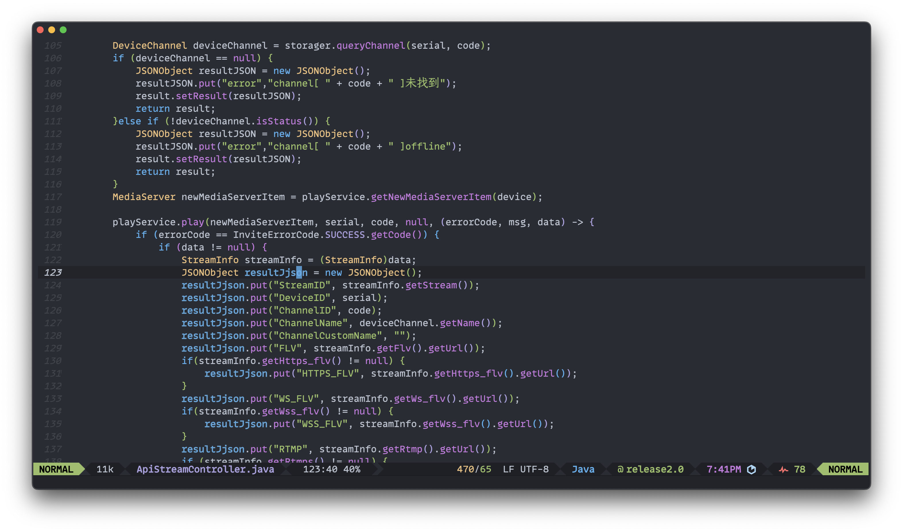

Garmin 同步心率至 Emacs
最近买了块佳明 Forerunner 255 运动手表,思考下能不能从佳明手表中获取实时心率推送至emacs中并展示,于是就有了这篇文章。
广播心率
Forerunner 255 支持 Broadcast Heart Rate，也就是将心率通过蓝牙推送给另外一个设备。 具体怎么设置看这里： https://www8.garmin.com/manuals/webhelp/forerunner245/EN-US/GUID-D8D363C2-0690-48D4-95E2-A3557E7D53C2.html 。不是所有的设备都支持 Broadcast Heart Rate。
LightBlue
LightBlue 是一款用于 macOS 和 iOS 平台的蓝牙调试和分析工具，旨在帮助开发人员、工程师和技术爱好者与蓝牙设备进行交互。它支持蓝牙低能耗（Bluetooth Low Energy, BLE）设备的扫描、连接、通信和调试，提供了一种简单的方式来测试和分析蓝牙设备。
在 macos 上通过安装LightBlue，可以扫描 Forerunner 255， 并订阅 Broadcast Heart Rate，如果成功的话，你可以在 LightBlue 中看到通过订阅的方式获取到的实时心率。但是通过 LightBlue 是无法取到心率的值给 emacs 使用的。不过通过LightBlue 我们获取到了一些非常有用的数据，比如Forerunner 255 设备的蓝牙设备 UUID，以及心率字段的 UUID。这两个值是我们连接设备及获取心率数据的重要编号。
bleak
bleak 是一个用于与 蓝牙低功耗（BLE）设备 进行通信的 Python 库。它提供了一个简单的接口，允许开发者轻松地与支持 BLE 协议的硬件设备进行交互，无论是进行数据读取、写入，还是管理 BLE 设备的连接和服务。
bleak 库支持多种平台，包括 Windows、macOS 和 Linux，并且与 异步编程（asyncio）兼容，可以处理并发任务和事件驱动的应用程序。 使用之前我们先安装bleak
pip install bleak
接下来让 GPT 帮我们写下通过bleak 获取心率的代码，简单说就是通过连接 Forerunner 255，如果设备不在线则等待 10 秒再尝试连接，代码对设备的离线也进行了简单处理，实时心率的数据放在一个固定路径下进行覆盖。代码如下：
import asyncio
from bleak import BleakClient, BleakError
# 设备的蓝牙地址
DEVICE_ADDRESS = "2A964ADD-92DC-C48F-80AB-6F403EC8A03A"
HEART_RATE_MEASUREMENT_UUID = "2A37"
# 处理接收到的心率通知
def heart_rate_notification_handler(characteristic, data):
# 假设数据格式是标准的心率测量格式，解析心率值
if len(data) >= 2:
heart_rate = data[1] # 数据的第二个字节是心率值
with open("/Users/van/.hr", "w") as f:
f.write(f"{heart_rate}")
else:
print("Invalid heart rate data")
# 连接到设备并启动通知
async def run():
while True:
try:
async with BleakClient(DEVICE_ADDRESS) as client:
# 启动通知
await client.start_notify(
HEART_RATE_MEASUREMENT_UUID, heart_rate_notification_handler
)
# 保持连接并接收通知
await asyncio.sleep(9999)
# 停止通知
# await client.stop_notify(HEART_RATE_MEASUREMENT_UUID)
except BleakError as e:
print(f"Error: {e}. Retrying in 1 minute...")
await asyncio.sleep(10) # 等待 10 秒后重新尝试
# 运行异步任务
asyncio.run(run())
elisp 部分
终于来到 emacs 里面，首先编写 get-hr-count 函数，从固定文件处获取心率数据。其次定义 doom-modeline-def-segment。就大功告成了
(defun get-hr-count ()
"Read the content of a specific file and return it as a string."
(let ((file-path "~/.hr"))
(if (file-exists-p file-path)
(with-temp-buffer
(insert-file-contents file-path)
(string-to-number (string-trim (buffer-string)))) 46)))
(doom-modeline-def-segment hr-count
"A custom segment that reads content from a local file."
(let ((count (get-hr-count))) ; 定义局部变量 count
(concat
(propertize " " 'face 'error) ;; 图标的颜色
(propertize (number-to-string count) 'face 'org-todo) ;; 数字的颜色
(propertize " " 'face 'org-table))))
效果
